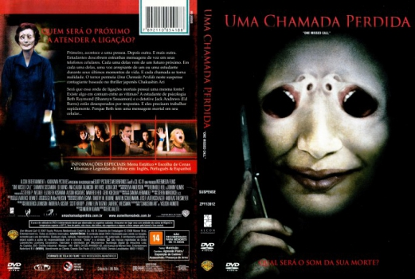

Uma Chamada Perdida (2008)


What will it sound like when you die?

Avaliação (IMDb):


4.0/10 (33.7K votos)
Avaliação (Usuário):
Outro Título:One Missed Call
País:United Kingdom, 87 minutos
Idiomas falados:Espanhol, Inglês, Português
Gênero(s):Terror, Mistério, Suspense
Diretor(s):Eric Valette
Codec:MPEG-2 (DVD)
Número: 5399
Sinopse:
Várias pessoas recebem mensagens aterrorizantes no celular, contendo o dia, a hora e alguns detalhes sobre a sua morte. Embora as mensagens possam ser apagadas, elas já estão marcadas para morrer.
Elenco:
Shannyn Sossamon, Edward Burns, Ana Claudia Talancón, Ray Wise, Azura Skye, Johnny Lewis, Jason Beghe, Margaret Cho, Meagan Good, Rhoda Griffis
Tipo de mídia: DVD R/RW,
Legendas: Espanhol, Inglês, Português, Sem Legendas
Alugado: Não
Tela: Anamorphic Widescreen